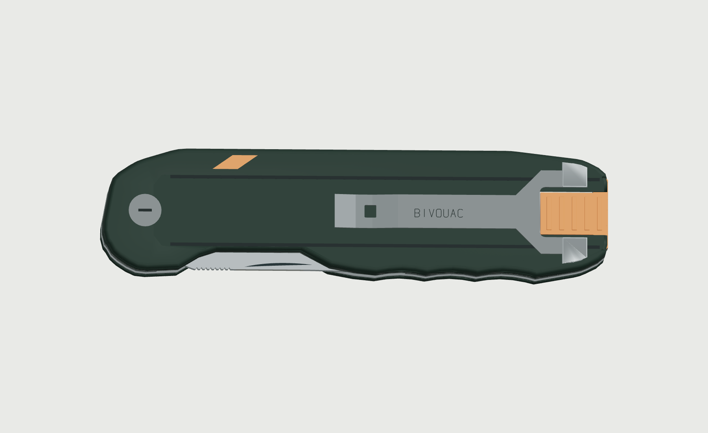
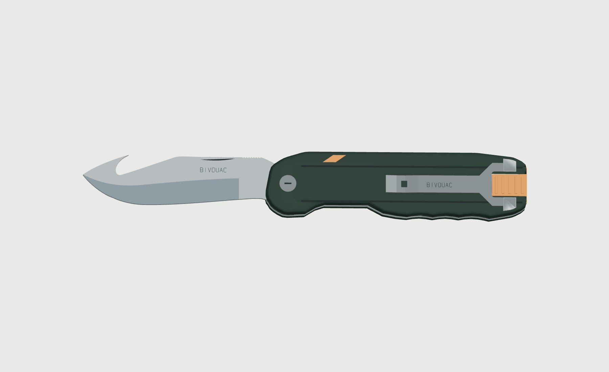
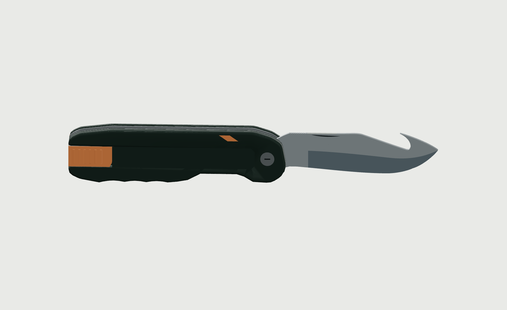

BIVOUAC
Un homme présente et ouvre le couteau de Pat devant la caméra.
Flow · Omni Flash 1.2 · 10 secondes · 16:9
Utilise les images comme références / ingrédients, pas comme première et dernière images imposées.
Utilise les images comme références / ingrédients, pas comme première et dernière images imposées.
1. Enregistre les images
Ce sont des vues du vrai modèle 3D, sans interface. Les deux premières montrent la même face avant et après l’ouverture; la troisième montre l’autre côté.

Enregistrer l’image 1 — fermé
Enregistrer l’image 2 — ouvert
Enregistrer l’image 3 — autre face2. Copie le prompt
Ouvrir le prompt en texte simple3. Dans Google Flow
- Crée un projet, choisis Vidéo, puis Ingrédients / Références.
- Ajoute les trois images avec Ajouter → Importer un média.
- Colle le prompt. Choisis Omni Flash 1.2, 10 secondes, 16:9 et une seule vidéo pour le premier essai.
- Lance la génération. Vérifie surtout que la lame pivote sur le bon axe et que les doigts restent cohérents.
Si la lame change de forme ou se transforme pendant l’ouverture, demande cette correction dans Flow :
Garde le même homme, le décor et le cadrage. Corrige uniquement l’ouverture : la lame BIVOUAC conserve exactement le profil de l’image 2 et pivote comme une pièce rigide autour de l’axe de l’image 1. Ralentis le geste et laisse la charnière visible.
Tout télécharger dans un ZIP